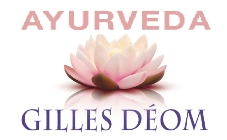
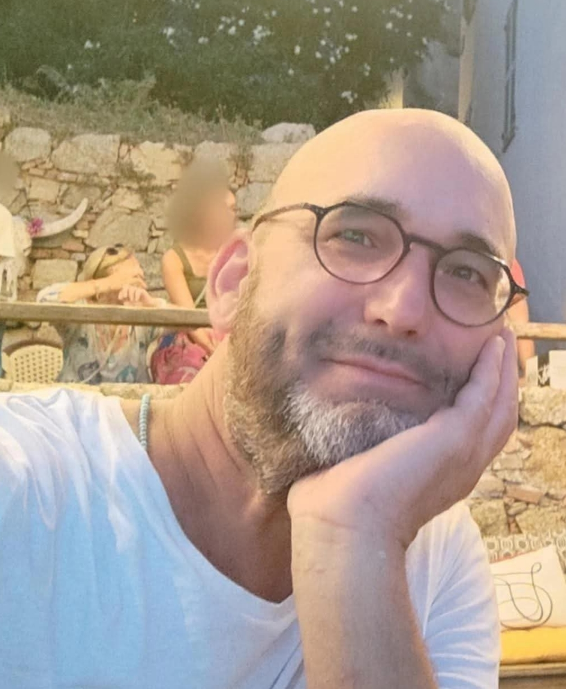

Praticien en Médecine Indienne
Lecture des 108 pouls • Massages ayurvédiques • Yoga • Magnétisme
15 ans d'études. Passionnées. Dont en Inde. 18 ans de pratique. Plus de 2 000 personnes accompagnées depuis 2008
📞 Appeler 💬 SMS ✉️ Email
⭐⭐⭐⭐⭐
« J'ai consulté Gilles pour favoriser ma fertilité après une période de galère et une fausse couche. Résultat : 2 rdv, des blocages levés, un organisme fortifié et des énergies rééquilibrées puis 1 bébé quelques mois après 🌈 »
⭐⭐⭐⭐⭐
« Je n’ai plus aucune inflammation , ni brûlure , tout est guéri ! [massage] Je lui ai dit que j’étais pudique et il s’est adapté avec une grande bienveillance , il a fait preuve de beaucoup de respect et de prévenance … Il possède vraiment un don exceptionnel et transmet beaucoup de savoir en restant très simple et humble »
⭐⭐⭐⭐⭐
« pour le test des 108 pouls.
Sans rien me demander Gilles a détecté tous mes points faibles et m'a conseillé des plantes qui m'ont fait du bien.
[Astro] j'ai demandé à Gilles de faire ma mission de vie en astrologie Ayurvédique.
Tout ce qu'il m'a dit au niveau tempérament, caractère, vie professionnelle me correspond à 100 pour cent , ça me permet de comprendre certaines choses de ma vie.. »
⭐⭐⭐⭐⭐
« Outre ses compétences "techniques", Gilles a une grande humanité et un immense sens de l'écoute. Je le recommande en tant que patiente mais également en tant qu'infirmière . »
⭐⭐⭐⭐⭐
« Incroyable, je fais des massages depuis des années avec la motivation de me sentir légère et sans tensions musculaires ( problèmes de cervicales) résultats que j'ai enfin ressenti avec les massages de Gilles Deom!
Le lendemain du 1er massage je n'avais plus mal nulle part, quelle sensation incroyable !. »
⭐⭐⭐⭐⭐
« Depuis que je suis suivie , mon nerf facial ne me fait plus souffrir ( exercices de respiration, massages, ventouses, alimentation adaptée...) »
ce sont des vrais avis de vrais gens visibles ici sur Google et Map

Rare dans le monde : scan complet par lecture des 108 pouls.
Diplômé en Ayurveda, Yoga, Massages, Ventouses et Reiki.
Master 1 Scientifique & Technique (1999).
Basé à Strasbourg – disponible dans le monde entier.
Cette approche ne remplace pas l'avis d'un médecin.
30 min : 40 €
1 h : 70 €
1 h 30 : 100 €
2 h : 130 €
3 h : 200 €
Huile ayurvédique bio : +10 €
15 minutes offertes pour se réveiller et boire.
Pour les nouveaux :
Si satisfait du 1er rdv, on s'engage pour 3 rdv.
Si non, je vous rembourse la moitié du prix
Tarif libre et conscient
Pour les étudiants, enfants, adolescents, parents isolés et personnes au SMIC ou moins.